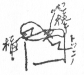
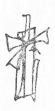

一月六日
（木曜）ただゴムをのむとき喉に無理が出来ていたいと云い、三田の東洋軒でスープと魚だけたべる。
かえりフィリッポフ
真直かえる。
この日記、三田通りの丸善でレストランをきくためにいそいで買ったので、こんなのになってしまった。
一月七日
（金曜）一月十日
（月曜）Ｙ、会、買物。
松川やより返事。今が温泉にはよいときの由。寒温泉とか云う。
Ｙ行けばよし。自分行かれるのはいやだが、余り一人で生活出来ず不安でたまらないから却って今度は行ってくれるとよいと思う。
一月十一日
（火曜）午後、自分で来。キレイな花。桜草、シクラメンの束。きのうＹ出かけ、三越でドテラの布を買い、花の道具も買って来たので、三人でやる。面白し。
夕飯ありあわせですませ、秋庭さん十一時すぎてかえる。
一月十三日
（木曜）この日記十七日につけて居るのだが……
モヤー御歳暮が間に合わなかったと云って、丸善で迚もよいチョコレート色の手袋を（皮の）買って来てくれた。うれし。うれし。
自分鞣の手袋すきだがもう幾年もしなかった。
一月十四日
（金曜）Ｙ、しきりに興がり、「ベコに感想かかすといいんだがな」
然し自分感想を書くのが本業でなく、今、書きたいなに押されてかくからよいので、これが本業で、短いものをあとからあとから書いて居たのではたまらず。
それを出しがてら、明日の仕度に買いものに出たら、あとから林町の連中来た由。かえって、置いてあるミカン、おせんべい、のり、など見たらいやな心持がした。さあ百合ちゃんのところへ行こうと出て来たのに居ず。それだけでなく床にでもついて居るのかと思って来たら。――では閉口だろう。
一月十五日
（土曜）晴 暖山内三人、宍戸、苅田、お澄さん、横田、小野。五郎の娘十七、手伝いに来る。サダ、その娘の来ようがおそかったので大あわて。少しふくれて居たところへ来たのは結構。
夕飯、後、トトでや、かかでや、その他して遊ぶ。食前、自分、トランプで、恋愛判断をやる。Ｙ、自分の恋愛を占われるとき、むきになり、未来は未来は、と云う。よいのが出なかったので一寸いや。ベコのもそうなり。恋など一つも現在未来になし。ふざけ、それは淋しやと云ったが本音なり。当らぬのを、やはり身に引きそえて、ウム当ってる、当ってる、と云うところ面白し。苅田さん、山内三人かえり、宍戸、小野、横田、お澄さんとまる。夜五時すぎまで遊ぶ。暖かで仕合わせ、汗ばむ位であった。
一月十六日
（日曜）晴
〔欄外に〕
二日つづいてこのように流連して、不快なくすんだのはよかった。
二日つづいてこのように流連して、不快なくすんだのはよかった。
一月十七日
（月曜）曇 寒○「悪霊」のつづきをよみ始む。
○中河さんよりモヤーの雑誌の歌十首
○三宅さんよりハガキ、原稿の礼。Ｙ曰く「如才ない人だな」
○シャトーフの言葉
「一箇国と雖 も嘗て知識や理性の上には立てられなかった。――知識や理性は有史以来、国民の生命としては只第二次の従属的な役目を演ずるに止まった。――あらゆる人民の有らゆる時代に於ける、有らゆる国民的運動の目的は、只この神を求める心にあった。――ユダヤ人は真の神の出現を待って居る間だけ生きて居た。そして世に真の神をのこして行った。ギリシア人は自然を神とした。彼等の宗教を――哲学、芸術をのこした。ローマ人は国家の名に於て人民を神とした。」
〔欄外に〕Ｙ、会
〔欄外に〕Ｙ、会
一月十八日
（火曜）○Ｙ、自分、ともに不快。
○苅田さん来、麻生久の「黎明」をかりる。
Ｙ、二十八日頃ナスに行く故、稽古山内さんにして貰うことになるらし。
○「黎明」よみ始む。Ｙ、もう愛国はやめることに決心す。そしてロシアにゆく仕度する由。去年やはり今頃そんな話が出た一日あと、私が本当に行くかときいたら、知らん、とそれぎりに成ったことあり。それを云い出して大笑いす。然し今度は本当ナリ。夜亢奮して話す。一月十九日
（水曜）「悪霊」。
林町にゆかれず。ために電話をかけたら、ｍ、
「あのお父様のあげたイスとテーブル百合ちゃんがつかって居るんだろうね。女中にきいたら、湯浅さんの部屋だと云ったが……本当にそうならいいがね」云々。ひどく不快を感ず。実に物質的で、自由な人間同士のたすけ合いなど、物一つのために出来ない馬鹿だ。ロシアの貴婦人は馬鹿でも、女中がそう云ったなど云うほど不見識ではなし。ｍ、自分の母が物質的だとよく怒ったが、まけず。それを傍に居て何とも云えぬ国男二十七にもなって頼りないことなり。彼は恐らく、そんな云い草の恥ずべきを感じないか。
一月二十日
（木曜）「悪霊」のつづき。Ｙ、「黎明」。
和田さん夕方から思いがけず来、夕飯でもたべゆっくりしてゆけばよいと思ったのに、議会で誰かに会う必要ありと一時間半ばかりせわしくはなしてかえる。送って夕刊を出したら、議会停会。政、本提携して不信任案を出す形勢と見て停会したのなり。
朴烈減刑奏請書公表の要求あり、大分もめて居たところ。
「悪霊」よみ終る。やはり天才の作なりと思う。ピョートルの性格、ニコラーイ・スタフローギンは勿論、ユーリア・ミハイロブナ、その他、実に奇怪な、いやに深い、ロシア的存在が描かれて居る。ピョートルが五人組を作ろうとして集会で言葉のひっかかり、皆の単純な熱心などを狡猾に利用するところ、フェツカがピョートル、ニコラーイの間を動く動きかた、マーリヤの発狂せる純一性、ピョートルとキーリロフとの最後の会見、その前フェツカがピョートルの贋物であるを痛罵するところ、シャトーフ妻、シャトーフの虐殺その他。日本人には逆に立ってもかけぬ複雑性が内面的に在る。ドストイェフスキーでなければかけぬ内面性がある。驚くべきものだ。皆が一種の超人なのには参る。ロガチェフスキーは最新のロシア文学の中にドストイェフスキーの二重人格、病的傾向をあげて作品の特殊な外貌と生命とを説明して居るが、まことに、ドストイェフスキーが云ったように、この神聖な五秒と、自分の一生ととりかえてもよい位に私も感ずる。――病的がこの間光輝あるものならば……。
〔欄外に〕
議会停会は三首領の八百長猿芝居ナリ。昨日田中、床次、若槻会合、表面予算成立をイトシテこれは無事に終らせ、あと田中か床次カニユズルツモリ。この若槻内閣は政党政治解体期の最も露骨ナ縮図ナリ。その点歴史的内閣だ。
議会停会は三首領の八百長猿芝居ナリ。昨日田中、床次、若槻会合、表面予算成立をイトシテこれは無事に終らせ、あと田中か床次カニユズルツモリ。この若槻内閣は政党政治解体期の最も露骨ナ縮図ナリ。その点歴史的内閣だ。
一月二十二日
（土曜）Ｋのディザインよし。大いによし。床面に音楽的エフェクトあってよし。うれしかった。四時頃までいろいろ話す。
和田さんに夜電話をかけたらもう大阪に立った由。つまらない人！
一月二十三日
（日曜）一月二十四日
（月曜）○Ｙ一種の神経衰弱にて夜昼顛倒し、自分もそのつき合い。夜更しも毎日つづくといやで、今日は癪にさわり、一人で生活したいとさえ思った。Ｙは妙な神経をもつ故、ときどき変調を来した生活をはじめる。
一月二十五日
（火曜）曇 寒暖計が欲しい、五郎の娘手伝いに来る。
二十八日にＹナスにゆく由。自分今度は始めは、とにかく一緒にゆかず。一人になりたし。疲労の故。――風邪、夜更しつづきその他が原因。
○Ｙ久しぶりで外出。出がけ『苦楽』新年号附録の一平の漫画占いをやる。面白い。Ｙが温泉にゆくこと。当分休養する必要のあること、温泉で浮気をするが東京までもってかえっては面倒の種その場だけがよし、など当って居る。自分、鉄瓶蓋をもちあげるの象で、精力過剰不穏ナリ、力の善導を要す。生意気な先輩にはかまわず自分の道を進め。その他、考えようによっては当って居て面白し。
一月二十七日
（木曜）寒歯イシャにゆくとて、苅田さんと二人でモヤー出かけた。あとに『若草』来ル。さむい。
夕刻、料理をして居るところへサダかえって来、泣く。オバが、おサダが行ったところでなおる病人ではない、と云って十五日頃からわかって居たのにしらさなかった由。かえりによって又「肉親のメイでもないのに」と云った由、これがこたえたのなり。哀れ。
モヤ、かえるなり歯が痛い痛いときりの先をあぶってゴムをほらせる。唇に火傷をさせてはいけないし、あぶなく、腰がいたくなってしまった。夜、三人がかりでネル仕立てあぐ。
一月二十八日
（金曜）晴天気よし。サダと二人で上野まで送る。苅田さんと会う。かえりに山内さんによってロシア語のケイコのことたのむ。快諾。
サダ夕飯の仕度して居ると、使が来、母が死んだ由。オイオイ声をあげて「ああくやしい、おばさんがあんなことを云ったからたった二日っきりか傍にも居られず、ああ口惜しい」と泣く。すぐやる。夜一人。大きい家に一人居るの一種の心持で落付かず。モヤーに長い手紙を書く。
五郎の娘かえす。
一月二十九日
（土曜）晴 風強しやっと今日から落付くこんたんをしてモヤーの机の上に自分のものを持って来る。
一月三十日
（日曜）晴Ｙ、寒かった、淋しかったで落付かなかったのなり。
一月三十一日
（月曜）晴二月一日
（火曜）晴Ｙ、やっぱり家で仕事することに決す。仕事には家ほどよいところはなきなり。若しそうでなかったら、古来大文豪など世界漫遊しつづけたろう。
二月二日
（水曜）晴二月三日
（木曜）床につく。
Ｙ、こんなの生活じゃない、
苅田さん山内さんのかえりによった。プーシュキンの「スカーズカ、ツアリ・サルターン」〔「サルタン王物語」〕をあげる。
サダがかえって来た。
二月四日
（金曜）二月五日
（土曜）二月八日
（火曜）二月十日
（木曜）もう幾度も幾度もこねかえして考えてあるが今度は実行可能であろう。一昨年カマクラに居て、二人で考えたことがあった。Ｙハルピンに居て、自分間三ヵ月位行くように。けれども、二人分れるのがいやで実行出来なかった。又経済上も。今度は何とかなろう。
Ｙ、「一つ今度こそ思い切って出かけなけりゃ一生うだつが上らない、そう恋々として居たって仕方がないものねえ、べこ」このねえ、べこに無限のものあり。
べこ大いに奮励一番して彼女を人にしてやらなければ愛した甲斐ないと思う。
二月十一日
（金曜）自分一人で生活するの、楽しみなような、恐ろしく空虚で、その空虚さに堪えず、何とかなってしまいそうなこわさいろいろあり。夜何だか落付いて眠らず。
二月十二日
（土曜）二月十三日
（日曜）きのう中村やから買って来たロシアパン、甘い、こんなもの食えるか、パン買って来い！「私の誕生日じゃないの、そんなに怒らないだっていい」「生れなけりゃよかったんだ」迚も心にこたえ、涙やっと堪え、パン買いに出かけたら、桜並木のところでむこう向いて立って居る人せきさんであった。却ってたすかった。そのうちサダもかえり、もやあこんどは逆に、私関さんと喋って居た間に、すっかり御祝らしい小鯛まで焼きもの、さしみ、赤飯、御つゆで御飯にしてくれた。うれし、うれし。もやあ、時々此奴め……と煮え立つような思いをひとにさせるが、しんにきたないものない故、からりとあとする。西部さん、横田さん来。横田君夕飯をたべて行った。これももやーおむれつを作って。――
二月十五日
（火曜）大抵一ヵ月三百円位のよし。旅費五百円。
Ｙの本の印税、私の本の印税、貯金、合わせて一年位何とかなりそうなり。
二月十九日
（土曜）かえり四谷まで円タク
二月二十日
（日曜）引違いに御すみさん来、校正の手伝い、かたがたＹ、会をやめることを云い、彼女に仕事の見ならいをさせるため。
自分こちらで仕事す。（手入れ）
夜、食後、又仕事、十時すぎやめ、自分何だかフキゲンになった。――いやで――一年もＹと分れて生活するのがいやで、不安で、苦しい。Ｙもそうと見え、夜二人長く眠られず、そのことについて話した。Ｙ、自分五月にゆけば私九月頃来ることにしたらよい、ね。淋しくないだろ？ そうね、随分違う。ああ、やっと安心した。ああ、べこあっちへ行ったとき声出して泣いちゃった。――
二月二十一日
（月曜）自分仕事（同）
二月二十二日
（火曜）二月二十三日
（水曜）二月二十四日
（木曜）本当によいホンヤクだ。もう少し出来る。あと手紙十ばかり。勿論三月中には出来る。ブラボウ

○私、仕事
二月二十五日
（金曜）途中お茶の水アパート又きいたが空間なし。松屋でＹの原稿紙。基、春江、両親、英、国、スエ子。スエ子、もう髪をのばすと云っておかっぱをやめ、兎の尻尾のようなお
父上、頻りに頭がいたいと云って居られる。母上、大切に
 ァーオークだから［＃「オァーオークだから」はママ］ですよ、年や何か考えてやらなけりゃ」、建築士法案を呈出するについて父上、努力して居られる、とのことだ。自分何だか幸福な一家と感ぜられず、愛、浄らかな、ひろい、賢い、健康な愛の不足を覚え、悲し。
ァーオークだから［＃「オァーオークだから」はママ］ですよ、年や何か考えてやらなけりゃ」、建築士法案を呈出するについて父上、努力して居られる、とのことだ。自分何だか幸福な一家と感ぜられず、愛、浄らかな、ひろい、賢い、健康な愛の不足を覚え、悲し。
〔欄外に〕
Ｙ、新潮へゆく。皆ルスであった由、文房堂で万年筆。
Ｙ、新潮へゆく。皆ルスであった由、文房堂で万年筆。
二月二十六日
（土曜）○今日仕度にケイコやすむ。Ｙは外出。
二月二十七日
（日曜）二月二十八日
（月曜）チノ、寒い寒い。一本道、右手山と寺、百姓や、左、雪だらけの田、こおったみかんたべた。どろんこ。
芸者、メリンスのきもの、島田、爺。
上スワ、上スワかっぽーの女給、
となりの部屋の男ジンゲルを買う。実ににくらしくマター・オブ・ファクト。すぐフロに行った。Ｙと私、先客のあくのを待って居たのに、ヨゴレタ男に入られ、Ｙフンガイ、迚も湯をアビルこと、あびること！
三月一日
（火曜）静かな家
いやな、スベル水はけの急な宿のフロ。
の湯、きずの湯、せんきの湯、笹の湯、菊の湯などあり。の湯というのなど面白し、古風で。
どびんこを一つ買う。ちり紙ぼられた。
Ｙ、かぜ苦しくよく眠られず。 ×
三月二日
（水曜）信州との境近くと、岐阜の境とは違う――自然が。所謂木曾は、ギフの方だろう、荒々しさ、くらさ、しつこさがある、ギフの方が。信州の方、軽い、
常盤館
三月三日
（木曜）十二時すぎ帰宅
三月四日
（金曜）又雪三月五日
（土曜）山内さんケイコ
チビの眼など、よく、こまかいところに気がついて面白し。十二位の女の子。
山内さんいろいろ話す。三月六日
（日曜）Summer の中、自分が一旦その Passion に自分をまかせたら、自分は全部それにまきこまれる、それを知っておそれ、それをさける、というところあり。
She knows the passion which is stronger than love, and I know it too.
三月七日
（月曜）三月八日
（火曜）三月九日
（水曜）嵐。南の風、落付かず。夜仕事す。
自分の一つの迷信、
これまで、四月の号によいものかけたためしなし、昔から。五六月以後よし。
これから、一二三とはいつも、大きいものはかけまいか。この長いのでも、三月四月などよくない。
三月十日
（木曜）アミノさん、黙って居たの、本当なり。
サダ公、浅川にやる、金をすられたとか何とかにて十一時すぎかえる。金をすられたってこんなにおそくまでかかりはしまい、活動にでもよって居たのか、彼女、外に出ると、わけのわからぬ云いわけをうまくやっておそくなる。面白い腕がある。
三月十一日
（金曜）Ｙ留守の心持、不思議な心持。今度は先より楽で（仕事が自分を追うから）ある。が、しんが寂し。その寂しさ、愛が一杯で重くしずかで淋しい、そんな寂しさ。わるくない淋しさとも云える。
三月十二日
（土曜）家へ電話を淀橋からかける。自働電話、前に、道普請をして居る。つる
Ｙからは何とも云ってよこさず
仕事。いろいろやって居て一つ感あり、もっと、三、コムプレックスする必要あり、そして深く彫る――。先のはやはり速くかきすぎたというところあるなァ。
三月十三日
（日曜）なるほど。――美しい春の雪だ。床の間に桃を活ける。雪、桃。けさＹより電報が来るかとたのしみにして居たが来ず。今夜立つとでも云うのであろうか。
三月十四日
（月曜）自分特急――八時半までまてず六時すぎ家を出て、品川に行ったがここに特急は止らず。東京駅へ行ったが居ず。あわて、あわて、あわててかえって玉電のところでＹに会う。
ああモヤー。かじりついてしまった。
三月十七日
（木曜）セストラー〔姉妹〕の件
○Ｙ京都に居
三月二十三日
（水曜）愛国婦人をやめるため、用事多く落付かず。
不安なり、フキゲンでもある。
三月二十九日
（火曜）自分外国ゆきの話をしたら、母上、そんなことだろうと思って居た云々。
余りひどい故、もう保留にしようとてそのままはなれにゆき、英男の話をきき、自分すっかり感動した。
もう母上は、元の母上でナシ、対等には扱えず。
英男、もうただ生きてさえ居りゃいいのさ全く。だからもう絶対屈従さ、何も本心なんか話せやしない。おかあさまの残骸だと思ったら僕可哀そうで可哀そうで泣いちゃった。そしたら、分ったらいいだって云うんだもん…………
四月一日
（金曜）もうこれから締切り、校正ナシ、万歳、万歳。
然し、Ｙ、何か不安で沈んで居る。わが心も苦し。
四月二日
（土曜）夕方、Ｙ渋谷まで顔そりにゆくので三人で出かけ甘グリを買い、『少年クラブ』、私は「絵のない絵本」を買い、Ｙはミルクリーを買い上々でかえる。
スエ子泊る。
○古川氏来。
四月三日
（日曜）スエ子かえる。
夕飯をたのしくたべ、九時すぎ四人で歩いて送った。
四月四日
（月曜）雨秀雄さん来て泊る。
フランス展、彫刻がすきなのが、はっきり分った。
バルザックの像はどうだ。元気がなくなったらあれを思え。
四月五日
（火曜）四月七日
（木曜）四月八日
（金曜）山本君腎臓か肝臓がはれたと云ってしょげて見えた。一円本一揃えくれるよし。
八十銭サイフにあるだけ。Ｙ、あっちこっちから、シネマパレスでオセロを見に行ったので、自分会うつもりで出たがカン違いしてシネマギンザをたずねもとよりなし。
もうつかれ、いや故そのままかえる。淋しかった。
宮原氏来、「アルネ」をかす。
四月九日
（土曜）宍戸蛇を見つけ踏む。
「おやめなさいよ、
「本当に、蛇は半年土の中にねて居るんだから大変ですね。」
夜スキヤキで御馳走ス。
四月十日
（日曜）鈴木澄、三沢、秀雄、五人で夜、酒をのみ愉快に食事す。間に、大橋房子さんの amie であった？ 喜多村という人、三人づれで来る。
おすみさん、土筆沢山つみ、よろこんだ。
都踊の一
三沢の話、臍の下の毛（三十三の女の）徴兵よけのまじない。
中学の先輩「君大家ぶって行った方がいいですよ」
四月十一日
（月曜）晴「云いますのにな、
何でも手を出して一寸習って見たというたち。
四月十二日
（火曜）あと一日か二日で手入れもすむ由。
四月十三日
（水曜）山本かえってからＹと二人散歩に出、ずっと三井のところから裏へ出、山の上までのぼって遊んでかえり、思いがけぬところから私の声をきいてポチ、かけ出して来た。苅田さん、コートのところまで迎に来、早稲田の試験だった、ヴブノワさんの由。あやし。あさってわかる由。
海市火事でＹのキモノやけてしまった。三人出かけ、オリエンタルでＹの服アツラえ、海市により、ホカケズシ、ボー・ジェストを見た。コールマンよろし。
四月十四日
（木曜）雨四月十五日
（金曜）雨これで、もののかける自信ついたと云ってＹよろこぶ。自分久しぶりであの長い間かかって居た仕事かたがついてうれし。
○自分この頃いかによきＹでも彼女の力でどうにもしてくれられないものを憧れて居る。日々新たなもの、この過ぎゆく人生の柱となるものにふれたい、その心持なり。一人のひとを愛し、その人から新たな愛――恋を味いたい自分。
○この頃自分ハンモンなり。何か内心の動揺を感じてこわい。Ｙは自分もロシアへつれてゆく気なれど――何か――のところ自分の心にあり。
○人世が、三十位になると分ったようになる。箇々の現象や人間大抵の心持が。それで人生が分ったと腰をおろして凡人に皆なるなり。
四月十六日
（土曜）風強し『読売』の懸賞に出すのという短篇、鼠、柿、人間、よませてくれる。よかった。いかにも彼女らしい。目立つ作品ではないが、よい。彼女の容貌の通り、一寸見ると色彩うすいようだが、沁々見ると美あり。若々しい、教師などして居る女の感情あらわれて居る。
四月十七日
（日曜）四月二十日
（水曜）『朝日』にやるもの書きはじむ。少し神経質にてよく進まず。
苅田さん来。Ｙ、しきりに写真をうつす。
四月二十一日
（木曜）春の嵐。白い梨花、青ずんで来たポプラーの若葉、鉛色に光り今にも雨になろうとする空。
パッショネートな嵐し。
四月二十三日
（土曜）四月二十七日
（水曜）時候の故か元来た那須と違って居るので変な心持。
四階の隅の部屋、
子供一人居ると、こうも賑やか、且つ目まぐるしいものか。
四月二十八日
（木曜）春リンドウの小さい花。
まだ早春の山に白く目立って居るコブシの花。
先、大変美しいと思った見晴し台の下のブッシュ、皆きりひらいて学校が立って居る。
一種の哀感あり。
四月二十九日
（金曜）然しかえりたくもなく、切なく、苦笑す。
四月三十日
（土曜）林町にまわって泊る。
どうしようか、又戻ろうか、こちらで仕事して行こうか思い迷ったが、迚も落付けず。戻る決心をする。
五月一日
（日曜）五月二日
（月曜）Ｙ、待って居たのに、苅田さんのロシア語の先生のこと、ちゃんとしなかったと云っていきなり怒る。
自分、がっかりし、こんなに思いつめて来たのにと涙を出す。
五月三日
（火曜）五月五日
（木曜）五月六日
（金曜）五月八日
（日曜）五月十四日
（土曜）五月十六日
（月曜）清琴楼の浴室。動物園のアザラシの檻。
一泊。日よし、
五月十七日
（火曜）自動車の輪がはずれ
五月十九日
（木曜）五月二十日
（金曜）秀雄も我まま、Ｙも我まま。二人とも負けん気より衝突しとかく咬み合う。可笑し。同時に不快。
五月二十一日
（土曜）五月二十二日
（日曜）五月二十四日
（火曜）五月二十五日
（水曜）○Ｙ、女中対手にいろいろふざけ、女中の人気ものとなる。
五月二十六日
（木曜）汽車すいて居たが眠し、新聞二つよんだだけで眠る。
上野より林町へ。
咲枝来て居た。母上、三越へゆくところで、しきりに干鱈のうまにを食べて居られる。出かけるとき「じゃ咲枝ちゃん左様なら、かえったらどうぞお姉さんによろしく」一寸もゆっくりせよと云わず。自分気の毒と思った。これで咲枝国男のフラウ〔妻〕になるのであったらこまったものだ。――然しそうなるに違いないが。――
林町へ泊る。珍しく愉快に喋った。八時すぎＹからアス三時でカエリタイと云って来る。
五月二十七日
（金曜）夜会芳楼、早めに自分だけ出て田端でＹと待ち合わせ、渋谷より自動車でかえる。
五月二十八日
（土曜）五月二十九日
（日曜）ゆきに、ロシア美術展。見てよかった、ロシアというものにすっかり楽しみが出来た。
三越、自分の
五月三十一日
（火曜）Ｙ、校正が多いのでうんざりして居る。自分の方まだ校正どころでなし。折角温泉へゆきそれ等の効、Ｙの方には余りないらしい。不キゲンなり、そしてフキゲンなことを恥辱とも思わぬらしく人に当る。自分生命の浪費を感じ陰気になった。Ｙのように自由にして居てものの出来ぬ人――自由でありすぎて却って不幸な人！ あいつよりは、と思っていつかアイツ以下になる。
六月一日
（水曜）お文さん買物に行くという、Ｙ Oki にゆくという。ついてゆき、ワンピースのような two ピースの着物たのむ。それから松や。
Ｙ、市庁へ旅券のことでゆき、事務所へよってお金おいて来てくれた。
三越へ一寸入り、三共へ一寸入り中力で一寸買ものし、おそくかえる。つかれたつかれた。
六月二日
（木曜）○おふみさん、顔に出来たオデキいたくて閉口、今日眼の中村からかえってからずっとホーサンぱっぷで寝た。
Ｙ、この頃の不機嫌のつづきで、下らぬことを云い出し（ｍと私とのことについて）私ひどく怒り泣いた。生活の狭さ、何と人間は生活をきたなくして平気で生きるか、精神的豚だと思い実に涙が出た（我々のような生活に於てさえ愛情の新鮮さが失われて所有慾ばかり根をはる！ 下らなさ）。
『新潮』の小説を考えて居るうち、ノートにとってない京都のいろいろのことを思い出し、興味を持った。生活上のこと、実にノートにとり切れず。忘れぬものは書かないでも忘れることなし。
六月三日
（金曜）おふみさん、昨夜も一寸話して居るうち親しみを覚え、おできでふくれた横顔可愛ゆく思った。しん、実にリアリストなり。
『ウーマンカレント』合評会記、一寸よみ、あまり上滑りのして居るのにおどろいた。宇野さんなど、あんなところで、もっと堂々云えばよし、何だか歯痒く歯痒く、出席しなかったの、とても幸と感ず。居たら自分、あんなことでは満足しない。
仕事そろそろ形がついて来かかる。
若竹の美しさ、まだ葉がひろがらず、すすきの穂のようなさやに入ったまき葉が一節ごとに出て居、作りものの大すすきのように美し。白い粉がついて居る。
○ケシの赤い花、となりに咲く。うちのバラ、久しぶりで咲いた。
薔薇なら花咲かん――
六月四日
（土曜）雨おふみさんのおでき、大分ひどくなり夕方鹿野さんに見す。女性的医者でさわぎ、バイキンが入った位のことだのに「こりゃ困りましたな」を繰返す。この辺満足なイシャなし。
六月五日
（日曜）Ｙ、殆ど徹夜、自分も一度おきて氷でひやす。
六月六日
（月曜）ふみ子、Ｙの話にきいて居たより、一緒に暮して見ると愛らしいところがあり、又その要求にも――張合のある生活を欲するところ、自分同情がもてる。ただ京都のような周囲では、それをまともに活かすこと困難なのなり。自分はＹも誤解して居るところがあったろうと思う。ふみ子はもっと愛されてよい女性なのだ。
六月七日
（火曜）自分も（彼）小さいできものあり、フミ子のメンチョーをきいておどろき、神経を立て長田氏に見す。
○蚊帳をつる。
○Ｙ、きのう、私が日曜日でもないのに若い書生と喋り込んで居て、おふみさんとの話に出て来なかったと云い怒り、散々つねった。自分その点は気の毒をしたと思ったが、そう勝手につねったりぶったりされること、セルフレスペクトを失って不快。ひどくやはり怒った、そのことについてＹ、ロシアへは一年おくれて行くと云ったら、何か怒り、涙をひどくこぼした。いろいろＹ神経質と思い、Ｙの留守のんびり一人暮したいとさえ思った。が、よく彼女の立ち場として考えて見ると、ロシアへ一人ゆくのいやで、丁度私がナスから一人かえるときグズついたようにグズつき一寸の淋しさなど身に
○自分等の生活には段々恋愛雰囲気とは違った肉親的愛がひろい部分をしめて来た。それ故時に（それで我々はよいのだ、自然なのだが）官能の憧れを感ず。恋を恋すような心持。（微妙なものと思う。夫婦ならこのように肉親的愛が互の間につよくても官能は存在する。女性同士の間ではそれがない。そこにある自然の動かしがたき力）恋を恋う心を、自分はどのように生かしてゆくか。――何故なら、自分は無条件で恋愛の発展過程を（恋愛、結婚、結婚の解釈）承認出来ず、又所謂モダーンに、現代文明のネゲティブの影響も受けられず、新しき価値を見出さないでは居られぬから。
○仕事二十枚しまう。今度の、圏境の事情はわるかったが本当にたのしみ愛してした。「高台寺」。Ｙに京都弁をなおして貰う。
六月十三日
（月曜）久しぶりで愉快であった。もう鼠色の麻の着物、白い帯、黒絽ちりめんの羽織、この頃眼がいよいよわるくものが或距離から二つに見える由、三人歩いてゆくパット六人になる。それが一列になって六人角を曲る、「我思う故に我あり」実にそういう心持がするという話。キューゲルゲンの話、改造の話、その他。Ｙ写真をとる。野上さん、うつしなれず、じき気どり可愛ゆく面白かった。が二人うつす心持が通わず、きっと自分変な顔してとれたろう。一緒に出かけて。
牛込館のヴァリエテを見る。変に苦しい心持に二人ともなった。Ｙはボスの心持、いやに痛切に身にしみるなり。映画としてよし、プティの可愛ゆさ。
六月十四日
（火曜）六月十五日
（水曜）夜かえろうとすると、父上、あす小樽に立つよし。明日夜来ることを約す。
○「こんな女中幾人つかって居たって気がもめる丈で仕方がないじゃないの」
「いやそういうが、国男の小言をきいて御覧。ちゃんとしたものは一日だって居ないよ」
「足りないだらけだから私だって怒るのよ。足りるようにして御覧なさい、誰もおこるの減ってしまうから」
イギリス人、常識的なところはいやだが、生活を理性でキッチリさせる力あるはよし。
六月十六日
（木曜）人間は生きて居る。然し生活はして居ない。生活を生活らしくするもの、人間らしく生きんとするもののいかに僅少なることよ！ 何だか恐ろしい力をもった惰力的無智が生活を覆うて居る。
この中に育ってＫなど、やはり親爺のような明快でない、ペックされるような――生活に押されて一生送る人間になるのかと悲し。何故生活がもっと豊富なる何ものかに向って運転されないのであろう。Ｙとの生活に於ても自分そう感じることあり。Ｙは批評する、然しそのものより高いものを自分で作り出す力はない。やはり狭い。独善的なり。これはわるいことだ。
六月十七日
（金曜）お母さんピアノを弾いて居た、玄関からヴヴノワ一人の姿が椅子にかけて居たのが見え、一寸構図的であった。お茶、ソーダビスケット、ジャム、チョコレートその他。
ヴヴノワさん、私のポートレートをかくという、彼女にとってもそれは制作である故なるたけ都合して坐るつもり。彼女が大してタレントのない作家であるのは却って自分に気やすい。
立派な人が描いてやると云ったら、自分まだそれだけの内容なく
六月十八日
（土曜）三越。
今日又かえれないから、どうかしてＹに会いたく、幾度も菊地にかけ、やっと三越へ出なおして行って会う。
六月十九日
（日曜）今度母の体についていろいろ心配し、人間が自分の体を自分の所有と思って甘やかし、不健康にする愚と冒涜とを深く感じた。心のためには教育、体のためには体育、これは二つ切りはなせない車の輪だ。大きな仕事、大きな精力、自分という生存はただ自分だけのため、まして自分のものなどにあらず。人間が食物について勿体ないと云う、その勿体なさを人間の生存というものの上について痛感しないところ、人間の普遍的愚なり。
六月二十二日
（水曜）「レンブラントが彼の友達を見たように諸君の友達を見よ。此偉人の周囲には生きた傑作しか無かったではないか」
この言葉を味って居ると、人生が次第次第に立体的に精神力のはり切った力で感じられる心持がする。一寸ちらついた眼がしっかり落付くようだ。
六月二十三日
（木曜）玄冶店の方は、梅幸も得意なもの故、軽くあっさりやってまあぼろを出さず。然しこうやって見て旧劇というものはつまり役者が舞台で遊ぶ、それを見るようなもの、本当の劇らしい気がせず。ほんとにゆきづまりなり。
六月二十四日
（金曜）鋭い感じの人だ。やつれて居た。生活者らしい感じがつよくいやみでなし。然し、何か、過去の生活を一緒にすてずともよい、ノビリティーまですてたのではないかと思われるところなきにしもあらず。
林町、母上、まだ参って居る。床につき、かゆをたべて居る。どうもただではないと不安新たなり。
かえりに雨。おそく新町につき淋しいな、と思って居ると思いがけずモヤー迎えに来て居てくれた。うれしうれし。おそくなっても泊らぬとモヤも信じて居たところうれし。
六月二十五日
（土曜）○おふみさんが始めて子供を産んだとき。その子がのばしてねている自分の脚のところを、丸い、小さい、つるつるした足で蹴る、そのときの心持、こみ上げて来るようであった。
又、子供が、自分の小さいときの話をきくのをよろこび、誰それが斯う云ったと云うと「あとは、あとは、何ちゅうた？」とききたがる。
○芸をやっておめにかける猿。
六月二十七日
（月曜）かえると、先、変な性交描写を送ってよこした男だろう、又変なものを送って来た。よまず、Ｙにわたす、そしたら、昔の淫本からわざわざかきぬいたものの由。昔のそんなものどんなものかよみたく、よんだ。
六月二十八日
（火曜）散歩、ふみ子洗髪のまま出た。田舎の子、「狐の姐さん、ばけ姐さん」と云った。
六月二十九日
（水曜）今日八十六度 今年始めての暑さ。三時すぎから仕度をし、朝日の竹内さん、ペンリントン夫人その他主催の東京ペン・ウーメンクラブのあつまりに出た。ミセス・ペンリントン劇評家。丁度雲の多い西空に日が沈んで美しかった。東京会館ですきやき。
ミセス・ペンリントンなど劇は毎月見、いろいろ批評はあるらしいが第一、日本語がよめず、それで日本文学のいい悪いは云々出来ず。やはり男の方がすすんで居ると思った。大森アニ子氏、七十歳、研究的なやや男性的なしっかりした婆さん。尾崎テオドラ、ヴィクトリアン・エージの中流人流な女性。
林町に泊り、夜はなれに寝て、いろいろ国男と話し感ずるところ多し。
六月三十日
（木曜）三越の床屋へＹゆく。それからオオキ、大阪ずし、かえる。
おふみさん、又おでき大きくなり、長田さんへゆく。冷アンポーを二三日しろと云われた由。
七月八日
（金曜）七月九日
（土曜）キリストの現代的復活。
七月十三日
（水曜）私共Ａ・１、で夕飯、銀座を歩いて「文明の
七月十五日
（金曜）七月十六日
（土曜）午後ふみ子帰宅、今日さだかえらず。
七月十七日
（日曜）夜になってさだかえる。
七月十八日
（月曜）芝浦から日覆いをかけた発動和船。
陣屋、玉置場、火薬庫。
小さい埠頭に神田カフェーパレス出張所、船の上に赤塗の手摺、二階の甲板に並んだ籐椅子、カフェーパレスの赤い旗。
船頭「そうですか」ウェイトレスの口真似。
溺死人、頭、肩、案外早い流れ方。そこを通りかかった漁夫。ピリリとした裸の足。
きれた鼻緒、若松町の下駄屋。
末膳、ゆかたの三人、自分そのまま居ネムリ、浜町河岸を散歩する。二十三日の川開きの下拵えの足場、国技館のイルミネーションが下から上へ消える。溺死人の残像、こわくてＹにだっこして貰って眠る。
七月十九日
（火曜）姉弟と云い乍ら淋しかった。それ故夫婦ではどんなか。
林町泊る。
七月二十日
（水曜）Ｙ、電話をかけてよこし、
「旅券が下りたよ――馬鹿にしてるじゃないか」
自分「あら、いやだ」と云って仕舞う。あまり現金に心理的会話なので可笑しく、かえってからも二人で笑った。
七月二十二日
（金曜）関さんに何か恋愛問題めいたものがあったのではなかったか。ちょいちょいした言葉の間からそう感じた節々あり。
七月二十三日
（土曜）中島さん来、何だか元気なし、いろいろ話して見ると、love lone したらしい。ひどく参って居て、もう精も根もなくなった絶望だ。十日の日に何か突然起り、二十二日にかえる迄、第一期の苦痛は経て来た由。死のうと思ったと。泊って行けばよいと思ったがかえると云い、二人で渋谷まで送った。かえりにベッドのところで着物きかえて居て「一寸！」泣き伏し乍ら「あなた、その人悪くお思いなさらないでね。何かおききんなったら、皆私がわるいんだと仰云って、ね。」自分その心に打たれた。
七月二十四日
（日曜）小雨Ｙ、ふみ子三人で銀座まで自動車で来て、ふみ子は写真、Ｙは上野まで来て呉れる。
○中島さんのこと心がかりなり。私の力でどうにもして上げること不可能故――つまり人間の他力で救われぬものと思うので――猶心配。どうか彼女が再び生活の意味や美を発見して生きるようになって呉れたらと思い、手紙を書いた。人生がその人にとって、必ず或一つの核を中心として構成されて居る。彼女では愛、それがぬけてしまう。崩れるしかない。一旦死ぬなり、それ故辛いことだ。
○ついたとき夜十二時半、七十八度。母、夜汽車の間じゅう喋って居た。闇夜、若葉を射る head light の光、その緑の房々しさ。
○小溝へ落ちた前の車輪
七月二十五日
（月曜）小雨七月二十六日
（火曜）九時二十分帰京。
○Ｙとロシアへゆくことについて父上に一寸相談したが、金銭についての考、全然自分と違い不快。その他肉親のうちにあっての孤独を強く感ず。
七月二十七日
（水曜）芥川のキリスト（西方の人）
――天に向ってのびた階子の中折れした形――キリスト達――という思想。（バルビュス――各
 が人間一人の救主――）
が人間一人の救主――）大分心持に影響され、かえり電車の中で、小穴隆一の死面スケッチを思い出し、何かオエツが腹からこみ上げて来るようで、窓外を眺め、幾度もべそをかいた。
新町にかえる。
七月二十八日
（木曜）体を動したのがましであった。気分少し変った。
七月二十九日
（金曜）三沢来。
この間と違い元気で愉快であった。
島地大等が死し、彼はいろいろの意味でのリーダーを失った。一時失望したが、今度は一義的な仕事のみ出来るような闊然たる心地――についた。赤裸々な心地になった由、勇気が出た由、顔つきまるで違った。
夕飯。
俊男来る、一寸。じきかえる。
七月三十日
（土曜）八十九度七月三十一日
（日曜）○心寂し、寂し。
○自分寂しいときＹはフキゲンとなって怒る。
○友達が欲しい、本当の友達が欲しい。
○夜、おふみさんと道玄坂へ散歩にゆこうとしたがＹも来ると云う。大さわぎをして出かけた。本やにて、『夜』、『装甲列車』を買う。鈴木澄、娘をつれて丁度我々の居たニコニコ堂とかいう家へ来た。目がわるくて、睫毛のない娘。かえり電車にて秋庭に会う。小さい枯れた枝のよう。
八月一日
（月曜）○雷が鳴り出し、うれしいと思う間もなく一寸降ってやむ。
○夜涼し。
○Ｙフキゲン。○自分孤。一日中言葉尠し。
○モヤー、ああ二つになる、二つになる。
○こじれた感情のままに感じると、Ｙとロシアへゆくのなど何だかいや。危険があるなら、それを冒険して見たい心持になる。敢て。
○Ｙも現金ナリ。その現金さ、我ママ、正直より発す。アキレつつ憎めず、という部。Ｙの心の中にある砂金。この宝でＹも自分もまともを踏み得。――Ｙ、自己を脱却する一大事に面せず、故に小。人物カツ然とせず。
八月二日
（火曜）――○――
今朝目をさましたら激しい雨の音がして居る。うれしかった。水たまりが出来る位。
仕事すむ。二十三枚半
今日二人キゲンよし。
八月六日
（土曜）汽車ひどい雑踏なり。寝台車にのる。
途中、「装甲列車」イワノフをよむ。
後半、装甲列車が包囲されて、或地点を行きつ戻りつ次第次第に狂乱的になって来る、内部の人間の恐ろしい精神状態がよく描かれて居て、心を動かされた。実に、現在、この瞬間しか理解せず、予測出来ず、感じ得ず――実在のすべてが一瞬に圧搾された極度の擾乱をよく描いて居る。支那人がレールの上で自殺して装甲列車を止めようとするところなど。――何か哀れなり、人間が哀れというこわい気がする。
八月九日
（火曜）心がまだ大人になって居ないのに肉体だけ大人になるのが何だか可哀そうな心持がした。世話をして貰うとき体じゅうに汗を掻き、憂鬱になって居るその様子も哀れで、何だか一日此方の心持も平静でなかった。
こんなに、何だか哀れなものとは思いもかけなかった。いじらしいのなり。
それでも私が居て本当によかった。
八月十日
（水曜）八月十一日
（木曜）咲枝又少しかわって来た。少し温いところが出て来て心持よし。よく見ると、美しい、若々しい。
ｍと話し、承知して居ること、Ｋに話しておいた。Ｋ大悦び。
モルナー、チャペックの作品よろし、感心した。モルナーのは「リリオム」。チャペック「虫の生活」と「マクロポウロス家の秘法」――この終りの、幕切れの言葉余りよくないが全体は一寸面白い。「虫の生活」の中のコーロギとガラガラの愛らしさ！ 構想大きい。ミシェル・オオクレルもよかったなあ。
八月十二日
（金曜）一大隊で池の辺へ遊びに出かけ、又夕方から池へボート漕ぎに出かけた。オール、もっと上手いと思って居たのにうまく動かず。
然し、二丁のオールが拍子をそろえて、サッ、サッと動くところ、リズミカルでいい心持だ。
緑郎、番傘を帆にしてそれで舟を動かそうとした。一寸美しい景色、咲枝の藍と朱と縞の帯、水蓮の花、競馬場の白い埒。
ラジオをかけると云うので、市次郎、シマまで杉の木を買いに出かけた。
○ｍ、ヒスになって居る。仏壇の部屋の籐椅子に額を押え。Ph! と思ったがフト自分のヒスを思い出し、やさしく言葉をかけ、世話をやいたら、すっかりなおって晴々した。よかった。「そういうとき皆が知らん顔しているといやでしょう？」「そりゃそうさね」
ｍ、私は私の他に大切なものなんか持たせないよ。ＦがＦでよかったわけ、又ＦがＦになり抜いたわけ。
八月十三日
（土曜）「夜」マルセル・マルチネをよむ、途中で。民衆の無知、雷同性、真実の覚醒の未だ遠きこと、政府の術策等巧にかかれて居るし、詩でかかれて居る調子もよい。マルチネ仏国人である――昔から革命を
八月十四日
（日曜）母に代りて歌へる
○わが背子はいかになしけん徒然のままにボロ株買はんと思ふか○いとどいとど心もとなき限なればとめに娘とかへらまく思ふ
○かへらまく思へど暑さいときびしアセモがこはくしばし止る
○わきもこよ二十日にならぬ前なりと早く来ませと祈つるなり
○久々に会ふ夜短し睦言のあい間に地所買ふ相談もあり
方々へたまって居た手紙書く。
○遠雷の音、小田原の濤の音を思い出し、秋ごろゆきたくなった。初冬もよいであろう。
Ｙ、再び家らしくなったとよろこぶこと限りなし、一人でも自分の居ることをよろこんでくれる人のあるのは有難きかな。どうか人々のよろこびの源となりたし。
八月十五日
（月曜）秋らしく、涼しい風が吹き通した。
のびたコスモス
前の空家の庭の蓼 の花
自分アサカに居た間、Ｓちっとも感じなかった。その代り仕事についても欲望持たず。こちらへかえって来ると、頭が緊り、仕事について考え、欲す。同時にＳも感ず。love と passion の分裂。自分この頃成熟を感じ、女性の開花を感ず。命が内から叫ぶ。雌蕊が雄蕊を呼ぶ。Ｙに自分この心持云えず。又云っても、Ｙは、気をつけないといけない、危険だと云い、自分も又どの位それを苦痛に思うか。Ｙは、人間が人間を愛せる愛に於て極まで自分を愛して居る。それを知って居る。自分も。それは愛だ。然し、愛とは別な熱情は、それで満されず。Ｙが男でないという丈の理由なのだ。Ｙの罪でなし。Ｙの愛でどうにも仕方ない苦痛だ。前の空家の庭の
○烈しい分裂の力を感ず。又墜落の誘惑を感ず。人間は時に目を瞑って奈落へ落ちることを欲するのは不思議なものだ。奈落の底を打ちぬいたら、何処へか出ないか。そこには、地球の彼方側に又国があるように、又天国がありはしないだろうか。
○強烈な何物かを欲す。――
八月十六日
（火曜）○いつか三沢が云った。――彼等が皆で
○この感情燃焼自分にこの頃よく分る。
○普通女性、この二つの力をこのまま力として感ぜず、愛とまぜ、愛と思って、異性に執着する。彼女等は墜落して居ることを知らず、いつか墜落しきって一生を終る。
○昨夜これ等のことを考え、苦しい心持だったが、このような内面的引っぱり合いを、はっきり自覚し、味えるのわるくないと思う。
○Ｙこのような自分を危がり、いよいよ無邪気に、いよいよベコにして置こうとすること、よしあしなり。分裂が益
はげしくなる。○私の内に天国と地獄が開ける。音楽。ロマン・ローランが音楽を愛するわけ。
○Ｙこのような心持ないのであろうか。Ｙのうちでは、何だかぼんやりし、調和し、女の子みたいな。
八月十七日
（水曜）○心以上の精神あることを人は折々忘れる。
○心の争闘と苦痛とを整理し、価値あらしめるのは精神だ。精神力の躍り上り――デーモンの力。
○人格――精神力の鍛練だ。何故なら、社会の経済組織が変更されても人間の心の苦痛は変らない、という芸術家の見地は尤もだが、人がもっと精神力をきたえられれば、この心の苦痛を見る力を獲得する――苦痛を考察し得る――考察したとき、苦痛はもう峠を越して居る、その人は或点苦痛を克服した。社会をすすめるのはこの精神力の強さなり。
〔欄外に〕
十七日、モヤー九時に立って秀雄の居る苦楽園へよって、それから京都へゆく由。
自分の心持今日になってもまだなおらず。苦し。昨夜Ｙに話した。この苦しさの圧力、危険性Ｙに分らないから、Ｙ、いきなり今夜立つというのだろう。
十七日、モヤー九時に立って秀雄の居る苦楽園へよって、それから京都へゆく由。
自分の心持今日になってもまだなおらず。苦し。昨夜Ｙに話した。この苦しさの圧力、危険性Ｙに分らないから、Ｙ、いきなり今夜立つというのだろう。
八月十八日
（木曜）今夜立つ。先に三越へ出かけ、髪をさせる、銀行へよってゆくと云ってＹだけ出かく。銀行時間なくて駄目。フーちゃん、自分あとより出かけ猶一時間余待つ。三人でオーキ。新橋の上の東洋軒で食事。Ｙ、八時四十分の汽車で立つ。水浅黄の服で、オカッパの頭で、車窓から片手を出し、いつまでも扇でバイバイをして居る姿、小さく、ミーラヤ〔かわいい〕に見えた。かえり道玄坂で水瓜をたべた。変な文学青年沢山居て、いやであった。夜、スタンドで、自分の上にある蚊帳の白さ、となりの部屋の誰も居ぬ感じ強く味う。少し神経的な位その感じ新鮮であった。
八月十九日
（金曜）○小溝幸子という人来。阿波の人、父林町の父と同じ教室であったと。本校を出て、今教師して居るのをやめて、文学の仕事をしたいという。自分をたよって出て来た由。何だか、その人のために不安を感ず、二十六。これまで何も書かなかった。感じ方一寸鋭いところあれど、教師的なところ見かけだけか、ならよいが。
○フーちゃんＹのことについていろいろ話す。彼女を通して、普通人のＹ感というもの分る。自分にはもうそのような第三者の心持がなくなってしまったから。この第三者の心持ないところ、よし、わるし、と強く思う。対手を理解する、というのは肯定するのみにあらず。
○Ｙが居ず、疲労を感ず。然し、今Ｙの居ないのは随分よし。居ない間に、自分の心持が何とか整理されるから。
八月二十日
（土曜）『朝日』へやる随筆七枚半、「蓮花図」を書く。
お文さん、写真やへやきましさせにゆく。
夜チェス、文子よくわからず。ピョンピョンをし、つまりあいこ。
農民小説中、「一夜の宿」、好い心持でよんだ。自分のは広告だけ、内容にはない、長すぎたのだろう。
○仕事をしまって、庭を眺めつつ、自分本当にＹの心を持って居るのだと思った。心故形がない。自分の内から追い払うことも追放することも出来ない。と。
○Ｙからインスピレーションを得るには、「知らないところ」なければいけず、常に或距りが大切、心持の。つまり対手を大切に思う心持もその一つ。
八月二十一日
（日曜）やはり苦しい。「善魔」、「人間の意志」をよむ。
八月二十二日
（月曜）八月二十三日
（火曜）○安田へゆき、ヴヴノワさんへ電話したら留守。愛国へよりお澄さんと二時間喋り。
 月でおフーちゃんと三人で食事。円タクでムサシノへ行く。ボー・ジェスト、砂漠の熱風、二度目ながらボー・ジェストやはりよかった。
月でおフーちゃんと三人で食事。円タクでムサシノへ行く。ボー・ジェスト、砂漠の熱風、二度目ながらボー・ジェストやはりよかった。○真直なものを曲げるには力がいる。曲ったものを真直にするには倍の力がいる。
○友なき孤独を誇る者は愚者だ。精神的高みにのぼればのぼる程、友のありがたみは著しく、又、必ず一人、或は二人、或幸運にして三人のバクギャクの友を得。
八月二十四日
（水曜）○芥川さんの「闇中問答」をよむ。感ずるところ多し。デエモンに彼がまけたという自分の感じは当って居る。
○自分の中にもこの頃暗き力のデエモンが動いて居る。故に苦し。（デエモン、或時に明々赫々たり。或時黒暗澹たり）
○芥川小穴氏と親しみ、甘え、愛した心持よくよく理解される。彼も「文壇人」はきらいなのだ。
Ｙより電報、六時二十五分品川着。自分が日曜日に書いた手紙のためにＹいそいでかえってくれるのか。嬉し。然し、何か苦しさの増す感じもあり。○自分Ｙに対する心持も、その死すとも生きるともの友愛に発育させないと、これは危い。ぬけ切れぬ。Ｙが自分のリーベである故に、自然なる苦痛。親友に語ることを語り得ぬようなのは不自然でわるし。そこからクサル。
八月二十五日
（木曜）然し今度の旅行はＹにとって愉快でなかった由、Ｆ［＃湯浅善吉、湯浅芳子の父］、ロシアはきらいや、など云い、いろいろあった由。
それに自分は又、ああいう状態であったから、余り気の利いた迎えようもせず、ためにＹまるでフキゲンなり。殆ど一日。このようなこと、互に一緒に生活するようになってから始めてだ。
Ｙ、私が一昨日おフーちゃんその他とムサシノへゆき、その他したことを、Ｙひどく怒る。一日中そのことを云う。Ｙ、ケンヤクして旅行して居たのに留守を目がけてそんなことしないでよいと。自分全然そのつもりではなかった。
八月二十六日
（金曜）Ｙ、その手紙の中から愉快なものを感ぜず。Ｙの云い分は、ベコ対Ｙを、彼女認めず――心の真を――Ｙ、べこに価しない、それ故べこより軽く扱う、その点不快なのなり。然し、そういう感じで公平に交際出来ないのは無理ないが、自分としては、Ｙそんな点にもっとノホホンになって欲し。
○野上さんの句 秋風の白き河原を歩きけり
八月二十七日
（土曜）『若草』へやる小説十三枚書く。『文春』への筆ならしなり。お敬ちゃんのことを書く。始めかき出し遅々として居たが本文にかかると飛ぶが如し。心の火の力だ。
○午前中何か揺蕩たる心持であった。
心の中に大きな花弁あり。その花弁露の重みで撓む心。満開して、八分通りの満開、散らず。満を持して静かな心。
八月二十八日
（日曜）中川一政氏、装釘のことで来訪。先野上さんのところで会ってからもう五年位になる由。
改造の佐藤さん来。
Ｙ、午後になってもフキゲン。自分が二十三日に使った金を思い出して見ろと云う。金のことより、又その使い道についてＹ彼此口やかましく云うのかと思うといやで云わず。夜、一言も口を利かず食事す。
夜ロシアへ行くの沁々いやな心持で、悲しく、滅入った。自分何故こんなにロシアへなんか行きたくないか。然し行かなければＹ行くまい。Ｙだけ行くとすれば我々の生活は破壊だ。破壊を欲する潜在力が、自分をこのようにロシアへ行かせたがらないのか。
○自分Ｙの居ナイトキの淋しさ、新聞記者が自分の書斎で落付けぬように、細かいキュークツな刺戟にナレテ、それがナイと落付けぬ。そういう部分もなくはなさそうだ。
クリストフ苦痛を籠の中に入れた。自分の苦痛な感情まだカゴの中に入って居ず。
泣キタイ、泣キタイ。
八月二十九日
（月曜）○白猫の
○竹の露しとど
○はためくや遠稲妻に虫の声
今日
○鎌切の恋のかたみか雄の
○桜並木
○赤松の根に露草は咲きやらず
九月二十二日
（木曜）〔日付なし〕
野分吹きし昨日の今日は秋日和
孟さうの根や太りたる土のひび
落葉朽ちきのこ生へたり。秋湿り
秋風に悩む黄蝶は二つをり
秋風の午後に輝く青木榴
孟さうの根や太りたる土のひび
落葉朽ちきのこ生へたり。秋湿り
秋風に悩む黄蝶は二つをり
秋風の午後に輝く青木榴
十一月五日
（土曜）雨了。二百八十八まで。
十一月二十七日
（日曜）朝モヤ、女子大学寮舎の山原さん、丹野さん訪問、オーキ、理髪の後林町へ来た。ベコ、心祝のため。
お赤飯、お頭つきの小鯛など、モヤにたべさせ、よろこんだ。二人で野上さんへ行った。ガミさん、盲腸で臥床中、三人でうなぎをたべ、鳩居堂の可愛い香お餞別に貰った。モヤ、一人円タクで昇さんへゆく、昇さんはこれ又大腸で床について居た由、名刺屋へ廻り、かえりに、名刺やの前の溝に落ちたとて、靴に一寸ケガをさせ、それでもよごれもせず、十時すぎ来。駅へ来た人、丹野、山原、山岡妻、木実、三沢、宍戸、小野、安成、岡崎、読売の女記者、うちからは国男行った。途中で花束の小さいのこしらえて。苅田さん、山内さんのところから三人。四十分出発。
十一月二十八日
（月曜）夜、三宅、岡本さん達と、花の茶屋で御飯。
十一月二十九日
（火曜）夕方ツーリスト・ビューローへは父上が行って下すったので、自分日露協会へ廻り、それからブブノワさんのところへ紹介状、届けるものなどとりに行った。
夜、丹野、和田。
十一月三十日
（水曜）十二月二日
（金曜）十時過、連絡船にのる。記者数名、それに混って名のらざる男二人三人、インタビュース。片山潜に会わないかなど、カマをかけた。その他、船中にのりこみの刑事二人、名刺をとってゆく。朝鮮と本国との間、なかなか厳重なり。
十二月三日
（土曜）京城で中村悦さん山田勇その他に会う。
十二月四日
（日曜）午後二時奉天着、一時間余待つのだが、荷物が少し心配で、きたない待合室を離れられず。大分ノスタルジャにかかって居るらしい記者に会った。
夜八時四十分長春着。ビューローの人が来て居て荷物のこと、その他してくれ、小一時間街を歩いた。雪余りふかくなし。十時十六分発ハルビンに向う。干城子の駅長の細君と同室す。モヤ南京虫にクワル。
十二月五日
（月曜）モデルン［＃ホテル名］に泊る。室日本の九円、二重窓の間に置いてある赤い水の入ったコップ。
ハルビンは大安＝ドルなり。一円が1.30になる割合であった。
中山さん、カルペイ夫人。
夜毛皮をつくらせた。梅原商店の鶴峯という人のキモいりなり。
パレス「ブラック・エンジェル」
十二月六日
（火曜）つれ立って中山さんへゆく。
十二月七日
（水曜）昼、加賀美さんの宅で図書館長、夫人、国際運輸の上田さんの
ハルビン出立
十二月八日
（木曜）雪野の上の憂鬱に美しい夕映を見た。日は早く沈むが、残光がいつまでも見えた。
午後八時マンチュリヤの税関、ここでモスクワタイムというのになる。六時間たすなり。
日本人同車に三人男、一人フランスへゆく絹商、ドイツへゆく製鋼会社の男、イギリスへゆく製麻。次の車に、ノヴォシビリスク領事館の書記生とそのつれの女。
十二月九日
（金曜）○これからモスクワ時間というので、昨夜、六時間急に時計進み、皆寝坊して、変な工合に一日を過す。
チタへつく午前十時頃、ブフェット〔軽食堂〕でハム、ピローシュカ〔あげパン〕、パンその他買う。
チタへつく前、凍った河を道にして、乾草をつんだ馬橇が十数台並んで通るのを見た。
○所謂プラットフォームなし。野天。
○この辺の汽車、二点打って間もなくいきなり汽笛がなって出発する。うっかりするとおいてかれる。
十二月十日
（土曜）午後一時頃イルクーツク着、ステーションでゴリキーの近作の出て居るロマン・ガゼートを買う。（一時間停車）
次の小駅より気候すっかりさむくなり、木に氷花を見る。
窓、特に車室の窓凍りてよく見えず。
いよいよ中央シベリアになる。十時頃にやっと太陽がぼんやり出て、四時すぎには夕方になってしまう。日のぼんやり照るのが一日に六時間。
この辺エハガキをさがしてもなし。いかにもシベリヤらしい。
〔欄外に〕
イルクーツクを出たばかりのところに大きな壮厳な氷結した河あり、アンガラ河。
イルクーツクを出たばかりのところに大きな壮厳な氷結した河あり、アンガラ河。
十二月十一日
（日曜）○曇天つづきなり。
○凍って真白い窓。何も見えず。夜外を見たいと思って顔を近づけると、見えるのは自分の顔ばかり。
クラースノヤルスク（午後三時頃）二十五分間停車、ラフカ〔小売店〕に、小アジアから来た細長いブドーあり。
○シベリア文学雑誌『シベリアの火』を書記生さがしてくれたがナかった。
汽車が出てからオベード〔昼食〕をたべ、変な黒海でとれる大きな白味の魚のブツ切りを白ソースで煮たものを出され気味わるく食わず。
○雪らしい雪も降らない。
〔欄外に〕
駅から出たばかりで、エニセイ河。
駅から出たばかりで、エニセイ河。
十二月十二日
（月曜）十二時頃ノヴォシビリスクへ着、エニセイ河。大きな都会で、郊外もひろく、クラスノヤルスクより大きい都会である。寒さ今日は特にきびしく、零下三十五度。散歩に出ると、ガローシュ〔オバーシューズ〕の中で足の指がいたく迚も向い風に長くさらされて居られぬ。雪、歯の浮くような音をたてて軋んだ。ブフェートで、
に居られるだけだ。二サージェンの部屋に居る。モヤーひどい風邪ギミで、喉に湿布をし、食堂にも出られず。
○井戸をやっと二つ見た。
十二月十三日
（火曜）○モヤーの
○今日は、二三日来珍しく晴ればれした太陽が輝いて居たので、よい心持。然しじき曇った。
○零下八度
○汽車七時間おくれて居る。
○ウラルに近づき、赤松の森が見えて来た。遠くの森はヒンデンブルグ将軍の髪の毛のようだ。今日珍しく風車を見た。水あげであろう。
○テューメで二十分停車。その間にブフェートへ行ってハム、フレンチフライのジャガイモ、パンを買う。外のラフカの方に極いいカビア（チョールナヤ・イクラ〔ちょうざめの筋子〕）が一キロ一円五十銭であった。パンも八銭、ブフェトは10銭。
○テューメで始めて、屋根あるプラットフォームあり。
○食堂に兵隊が五六人居て2.50のオベードをたべて居た。
○熊が居そう。
十二月十四日
（水曜）○汽車二時間とり戻した。○夜の間にウラルを越してしまい、今朝は柔かそうに白い雪のたまった懐しき北欧州の
○人家、人手の入った耕地、材木をつみつつ走る橇多く見ゆ。丘陵の起伏あるところへ彼方の森林帯からかけ出して来て汽車を見て居るような樅の木沢山あって可愛ゆし。暗くなってから（午後六時）ウヤートカに着いた。そこでは荒物屋のような店三四軒出て居て、この地方の樺で作った煙草入れ、マッチ台、ペン入れなど売って居た。となりの人チェスを買った。三円五十銭。
○食堂のボーイ、若い方ピノチヨの鼻のような顔つきの、右頬の下に痣があってそこに長い髭をそよそよさせて居る男。年とった方は、カラマゾフ兄弟の中のスメルジャコフ的額つき。こっちのワゴンのボーイの一人は
○雪が降っても木を切って居る男達アリ、生活それだけ楽なのなり。
十二月十五日
（木曜）ボリシャーア・モスコウスカヤ［＃ホテル名］に部屋なし。秋田さんの居るパッサージ［＃ホテル名］というのにゆく。入口狭く、玄関、いきなり階段。米川さんの部屋へ当分居候をさせられた。夜やっと小
十二月十六日
（金曜）この部屋は小さく、窮屈ではあるが、モデルンのように、南京虫の心配なし。
○風邪急に気管支まで侵入したと見え、しきり、末期の息のような音を出す。胸と背中を湿布し、一日ホテルにとじこもる。
○夜食堂へ行ったら、アンズのような頬の感じの若い女の人盛に喋って居た。珍笑子［＃メリー・ツィン］という日本名のあるチタの人、日本語がコンラッドの仕込みでなかなか達者。これから私共の先生になってくれる由。ガウズネル、米川、秋田、鳴海さん達を迎えに来た。エスキモー風の白茶まじりのしゃれた毛皮外套に帽子をつけて居た。笑子氏の外套もなかなかよろし。インテリゲンチャの服装は、ここでもしゃれてハイカラーだ。
〔欄外に〕
月給、大臣で二百五十円位、普通の人はよい役者でも二百円、四人居なければならぬロシアのスペシャリストだけもっと沢山貰って居る。
ピリニャークの日本印象記をよみ、彼のプティ〔小ささ〕を感じ、日本の官憲もわるいが彼もわるいと思う。彼の観察の浅さ。彼は2000も収入がある成金の由。
月給、大臣で二百五十円位、普通の人はよい役者でも二百円、四人居なければならぬロシアのスペシャリストだけもっと沢山貰って居る。
ピリニャークの日本印象記をよみ、彼のプティ〔小ささ〕を感じ、日本の官憲もわるいが彼もわるいと思う。彼の観察の浅さ。彼は2000も収入がある成金の由。
十二月十七日
（土曜）○夜、二人部屋で方々にハガキを書いた。
◎午後七時前後土曜日で、寺々の鐘が鳴る。その合間にホテルのどこかで、いい男声合唱が聞えた。豊富な感じで、二人とも亢奮した。
十二月十八日
（日曜）零下二十度出たついで故、そのまま一寸宿へよって、土産物をもって、ブブノワさんに紹介状をもらった人のところへ行かけた。
街の見当はついたが、家見つからず。歩き、きき、戻り、又きき、又来た方へ戻る。散々やって、フト一人、大変親切な女のひとに出会い、その人が９Ａというのをきいて、きいて、散々又歩いて、やっと見つけた。古びたモスクワの家、殆ど真暗な階段、おどり場、一人が一間ずつ部屋をもって、ごたごた古臭いものばかり飾ってあった。外国人の友達にうっかりつき合うと、やかましい、明日、役人が来ないものでもないと、ひどくビクビクして居て、変な心持がした。クワルティーラ〔共同住宅の一戸〕を見つけて貰うどころの話でなし。かえる。細君の姉という人、元、オペラの女優でイタリーへも行って居たことある由、心臓病で横になって居た。その人英語で、右のような話をした。
十二月十九日
（月曜）ドストイェフスキー記念会は面白かった。始め、「罪と罰」を一部分ずつ、コスチュームなしでやった。後、「カラマゾフ」をコスチュームにて。チェホフの甥、相当人気ある役者の由だが、フョードルをした、カチャロフなどに比すと、スケール小さいし、名俳優と思われず。ヤニングス的俳優モスクビン、人情的役者で、面白かったが、カチャロフにフランスのクラシックは出来ても、モスクビンには出来ないところあり。
十二月二十日
（火曜）クワルティーラがあった由。
モヤこの頃よく眠らず、疲れた由。先に眠ってしまった。自分十二時ごろまでかかった。
十二月二十一日
（水曜）○クワルティーラ駄目になってしまった由。
○講演会。ドム・ゲルセン――ゲルセンの家――に於て。ピリニャーク、自分の日本印象記の中から長く読み、米川さん、変な日本文学についてを朗読し、キム氏、日本の雑誌とイッヒロマンについて話し。中休み十五分の後、自分。少数の聴衆であったし、場所もせまいから、自分ちっとも上らず。又立たず、椅子にかけて話すの楽ないい心持であった。十二時に散会、ソレカラ下のクラブ、ダイニングルームで、暫く居て、羽織をシューバ〔毛皮外套〕の上からかぶって二時頃かえる。数人の作家に会う。このダイニングルーム、地下室、ひどくなったピアノをがんがんならして、若い作家が、若い品よくない女と、
○この講演会ピリニャーク一派の広告に、自分達つかわれたような形故不快であったので、クラブ、ダイニングルームのさわぎも気に入らず、モヤ第一にくどくくどく、自分に当って怒った。そして、ロシアの作家達、ああ云う生活をして居る若い人々に対して懐疑的になった。自分勿論そうなり、然し、モヤ余り、そんな仲間に入る為に来たのではないなどと云う故、自分も腹を立て、いやな心持になった。
十二月二十二日
（木曜）モヤ湯に入る。
その前、二人で出かけ菓子を買い茶をのむ。
この買物に出てからかえるまで、モヤに怒られ通しであった。いい気になって、ひとに、菓子などおごる気になって、自分の懐を何と思う。「私ばっかり心配して、ピイピイして居る。」返事しろ！ 返事しろ！ と幾度も小づいた。
十二月二十三日
（金曜）○舞台に所謂装置なし。銅張りの背景の前に、後上りになった小舞台を置いて、どこまでも絵画的にする。平舞台をつかったのは、安宿へ市長が訪ねて来るところ、レビゾールに皆が請願に来たところ、及び最後の場。
○レビゾールに間違われるフレスターコフにロイド目鏡をかけさせ、世紀末的にひょろ長い体の線を強調させ、蜘蛛のように馬鹿馬鹿しく陰鬱で、皆がこの若者を中心にして浮かれるところ、音楽を入れて、妙に複雑なゴーゴリの雰囲気を出した。浮々した、悲しい不安なような。科白、音楽、運動この三つを非常に立体的にくみ合わせた点。築地のように、田舎風で、明るくなし。
○最後の場面、印象強し。市長気が違う。狭窄衣を持った男がいきなり現れる。非常な音楽の間に白いカーテンが降り、そこに本当のレビゾールが来たと書いてある。猶ひどい音楽につれて、扮装のままの群集が、男女手をつないで、観客席の前を馳け抜け、やがて裏から出て来、逆の戸口へ入る。――花道の代り、通路をつかい、観客を劇の熱狂中に巻き込む。群集のつかいかたうまし。始め、市の小役人の出入りするところ、例の、銅の狭い戸から一度に、オペレッタ風に出させ、ひっこませ、手紙をよむところは、小ステージの上につみかさねて、顔々だけ
〔欄外に〕
ボックスよりサボイ［＃ホテル名］へ行って、敬意を表し、後藤さんに。計らず、黒田礼二氏に会い、夜メイエルホリドへゆく迄喋った。
ボックスよりサボイ［＃ホテル名］へ行って、敬意を表し、後藤さんに。計らず、黒田礼二氏に会い、夜メイエルホリドへゆく迄喋った。
十二月二十四日
（土曜）面白いところあり。ニキーチナ夫人、二百何人かの文芸家をメムバーとするクラブを作って居て、入った部屋には、壁間すき間なく、作家たちの写真、スケッチ、ポートレイト架すなり。又書斎には伝記をクラシファイして集めてあり。作家に関する蒐集癖が、学者的クラシフィケーションを受けたのなり。イクラ、キウリ、ソーセージ、パン、買い込んで、黒田さん樹をかざってくれ、蝋燭に火をつけ、サモワールをとりよせ、愉快に二時頃まで喋った。
○このようなクリスマスしようとは思いがけず。面白かった。
米川さん、メーエルホリドへ行きがけに、イズボーシチク〔辻馬車〕、タクシと衝突した。馬も怪我せず。
〔欄外に〕
クリスマスイーブ
粉雪降る。いかにもクリスマスイーブらしい夜であった。
クリスマスイーブ
粉雪降る。いかにもクリスマスイーブらしい夜であった。
十二月二十五日
（日曜）米川さんカーメルヌイ［＃劇場名］を見にゆき、自分達そこまで迎えに行って一緒にピリニアークの家へゆく。
郊外の、板の塀をとり廻した家。その板塀日本で云えば丁度、建築場の板囲いのように趣なく、荒れた感じ、特に夜、雪が囲りに高くあって、凄かった。ロシア人にとって、それが平気なところ面白し。
○ピリニアークの家、窓のカーテンにまでも、厚いカーペットをつり下げてあるところ、彼の生活力と、腕力を示して特徴あり。
○大きないいイワンナーという犬が居る。黒いキューピーを見せたら驚いて逃げてしまった。
○十七世紀の盃、オッカ、鵝鳥、ハム。
○こっちの部屋で、プレフェレンス［＃カルタ遊び］をして、三十五カペイカかった。
○細君の弟、植昆虫学者、おとなしい男、隣の部屋で、詩を誦して居た。
Водка〔ウォツカ〕をのんだ。
○かえりにキノアルス［＃映画館名］を見た。「二日（ドワ・デニエ）」オデッサに於ける白赤の衝突から題材をとったもので、やはり強い、強い、強い。
十二月二十六日
（月曜）何だか落ちつかず、二人一つ部屋に居るの苦しいと思う。
二人ともひるねをした。
夜、モヤ、本をよんでくれ、（セーフリナの伝と、唯物史観）自分編物をして、一方の方のスウェターの袖をあんだ。
十二月二十七日
（火曜）○珍しき暖かさ、窓の氷がすっかりとけて、下の家々の屋根がよく見え、煙突から出る煙も見え、いい心持であった。
○街路の雪、軟かになって、深くガローシを埋める。橇重そうなり。
○花屋の窓の氷もとけ、街から白いリラの花やシクラメンの花がすっかり見え、美しく、シクラメン一鉢欲しかった。Ｙ、「お正月だから一つ買おう。いくら位かな、三留位だろうな」やはりゲルセン街で、1.30のバター入れのガラス器、十一
十二月三十日
（金曜）十二月三十一日
（土曜）○やはり年の暮らしく、又土曜日の買物日らしく、あちこちの店、賑やかに人の出入りあり。
○午後黒田礼二氏来、秋田さんのところの連中と話して居るうち、一つ賑やかに年越しをしようではないかということになり、自分達芸術座のマーラヤ・スチェナー〔小舞台〕に呼ばれて居たのをことわりに伝えて、Ｙの発案にて一人前一留十哥ずつ出し、自分達買いものに出た。ハム、ソーセージ、胡瓜、菓子、チーズなどにて送年。かくし芸など出て、三時頃床についた。除夜の鐘ならず。
一月に書いたもの
是は現実的な感想――ウーマンカレント
沈丁花 ――文芸春秋
一月二十八日 Ｙナスに出発 松川やよくない由。
同三十日 Ｙ帰京。
二月に書いたもの 海浜一日――
二月五日 林町両親、スエ子と国府津にゆき同八日 帰京。
二月二十七日 二人で仕事の下拵えのため、下諏訪に立つ。
下諏訪、上諏訪、茅野、下諏訪亀屋ホテル二泊
三月一日 浅間温泉 笹湯 西古川一泊、Ｙかぜにて閉口 一泊
三月二日 蒲郡トキワ館 雑駁で、いやに関西の都会風で二人の気に入らず、然しＹのセキなおった。
三月三日 蒲郡より、Ｙは京都へ。自分は東京へかえる。
三月十四日 Ｙ京都より帰京
四月に書いたもの 長篇完了、わが五月、明るい海浜
四月二十七日 Ｙ、自分関さん楠生さんと那須へ立つ
三十日 一先ず帰京（自分、関）
五月二日 自分又那須へゆく、
五月に書いたもの、街、夏遠き山、一隅、
五月二十六日 自分 七日、Ｙかえる。
六月書いたもの
一月 ○悪霊 ○死の懺悔 ○黎明 ○漫談明治初年
二月 サムマア、
三月 サムマアのつづき、退屈読本つづき、
四月 ロマン・ローラン、ヴェートウェン、絵のない絵本
五月 ピルランデロ、ゲーテとエッケルマンの対話第三
六月 山科の記憶